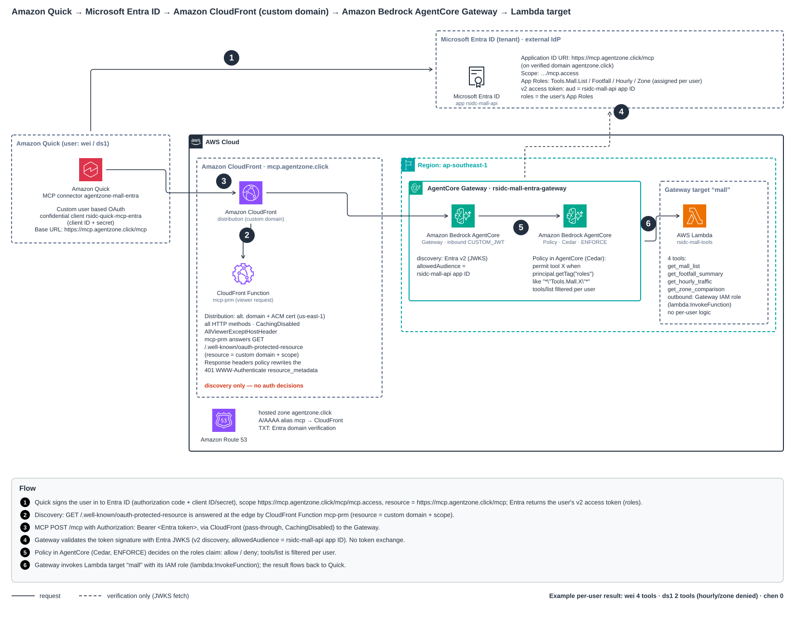

Architecture: Quick → Entra ID → CloudFront → AgentCore Gateway → Lambda
Amazon Quick signs the user in to Microsoft Entra ID and calls the Gateway through CloudFront on the custom domain
mcp.agentzone.click. CloudFront only answers OAuth discovery (mcp-prm); the Gateway validates the Entra token
(CUSTOM_JWT) and Policy in AgentCore (Cedar) decides per tool from the roles claim. Numbers match the Flow legend in the diagram.
Solid = request, dashed = verification only (JWKS).

Open full size · Solid = request; dashed = token signature check against Entra JWKS (no token exchange). CloudFront only rewrites OAuth discovery (mcp-prm + response headers policy); authorization happens at the Gateway (CUSTOM_JWT + Cedar on the roles claim).
Click the diagram to open it full size.